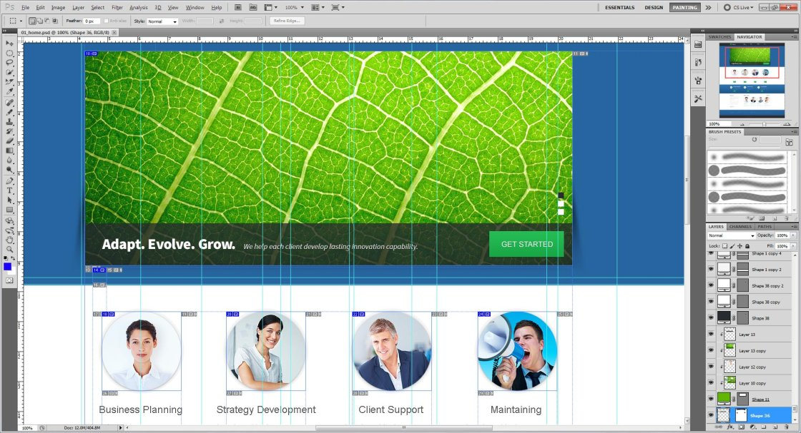

Unzipping Template Package
After unzipping the template package you will find 3 folders: "documentation", "screenshots" and "site". You can also see a zip archive called "sources_############.zip" that you need to unzip.
The sources package contains all source files for the template. The package is password protected and can be extracted only with WinZip (Windows OS) and StuffitExpander (MAC OS) software.
You can download both applications for free using the free trial options:
While unzipping "sources_############.zip" archive you will be prompted to enter a password, which you can find at your Product Download Page (open the link in the email you received from our company).
As soon as you are done with the unzipping the template you should have 4 folders in total: "documentation", "screenshots", "site" and "sources".
General Information and Template Structure
Software requirements
Adobe Dreamweaver (download free trial). Used to edit the .HTML, .JS, .PHP and .CSS files.
Adobe Photoshop CS or later (download free trial). Used to edit .PSD files.
The following scheme displays the Bootsrap template files structure.
- "documentation" – contains documentation on template editing and installation.
- "screenshots" – contains screenshots of the template.
- "site" – contains the .html files of the template.
- - "assets" – contains assets and bonus add-ons.
- - "bat" – contains contact form processing .php script.
- - "css" – contains all the .css files used in the design.
- - "img" – contains all the images used in .html files.
- - "js" – contains JavaScript libraries and jQuery plugins.
- - "search" – contains .js, .php and .css file of the search engine.
- "sources" – contains source files.
- - "less" - contains .css LESS files used in the template.
- - "psd" – contains Adobe Photoshop .psd files.
- - "fonts_info.txt" – contains the list of fonts used in template.
- - "info.txt" – contains the information about password protected "sources" folder.
Editing Bootstrap template
Working with the template you need to edit the .html, .css, .js and .psd files.
Editing HTML and CSS files
All editable HTML files are located in "site" folder of the template package (index.html, index-1.html,index-2.html, etc.) Each index-#.html file represents a single template page.
To open .html file with Adobe Dreamweaver application, you should right mouse click on the file, and in the context menu select Open with -> Adobe Dreamweaver. When the file is opened you can start editing it.
Adobe Dreamweaver is a recommended application as it allows you to edit the HTML files content in visual mode. Open any .html file and click the Live Code button at the top of the screen to switch to visual mode.
Feel free to check the detailed text and video tutorials on how to edit HTML files with Adobe Dreamweaver.
CSS files are used to change the template appearance like fonts (font-family, font-size, color etc), backgrounds, column width values etc. You can edit the css files with Adobe Dreamweaver application. Detailed tutorials on how to work with the CSS files are available at our online help center.
Editing PSD files
PSD files are located in the "sources/psd" folder in your template package. PSD are the source files of the template design. They are divided into layers so any part of the template design can be changed.
During the customization process you can refer to the PSD files in order to change the images used in the content pages or in the design.

You can learn more about working with photoshop by checking the detailed tutorials.
Custom Fonts
Some templates may contain the non-default fonts used in the design. By default the internet browser can render only fonts that are installed to your operating system. In other words if your website design uses some custom fonts and these custom fonts are not installed on your website visitor's computer, custom fonts won't be displayed. Default fonts will be rendered instead. That's why web developers should look for some alternative solutions. In our Bootstrap templates custom fonts are embedded using Google Web Fonts technology.
Google Web Fonts
You can learn more on using Google Web Fonts by checking the tutorial on how to work with Google web Fonts.
Customization Tutorials
How to edit text
Bootstrap templates are HTML based templates so all content is stored and could be accessed though the .html files.
- Open your template package and go to the site folder.
- There open index.html file with your HTML editor.
- You can use the search tool CTRL+F to find any text you need.
- Edit text in HTML editor. Save the file and open it with your Browser to see the changes.
The other way is to use the browser developer tool to find the blocks you want to edit. You can learn more about the developer tools checking the tools description and tutorials.
Feel free to check the following Developer Tools article.
You can also check the video tutorial on how to edit text in JS Animated templates
How to edit images
Open the template folder, go to 'site/images' directory. You can upload your images with the same name and extension to replace the default ones.
The other way is to upload custom images with your titles and extensions. Then you’ll need to change the image file names in the html files.
- Open .html file from the “site” folder with your html editor.
- Use search tool CTRL+F to find the images in the html file.
- Replace the image title and extension.
You can also check the video tutorial on how to edit images.
- Open the template folder.
- Go the site/js directory.
- There open the 'forms.js' file with your editor (Adobe Dreamweaver, Notepad etc).
- Using the Find and Replace tool (CTRL+F) search for the ownerEmail or just scroll down to the very bottom of the page.
You should see the following line:
ownerEmail:'#'
replace # symbol with your email address. That’s all, now the contact form should send the messages to your email account.
You can see the detailed tutorial on how to activate contact form in your template.
TM add-ons
Bootstrap templates are provided with four free add-ons:
- Contact Form - gives visitors the opportunity to send messages to the site-owner.
- Search Engine - performs search through content of .html files.
- Under Construction - is the page with countdown timer.
- Subscription Form - allows to organize newsletter subscription.
Note, Contact Form, Subscription Form and Search Engine add-ons are already implemented into your template and working by default. Feel free to check the detailed documentation for each add-on in case of additional configuration or in case you are going to implement them into another website/project/template.
- Contact Form
- Search Engine
- Under Construction
- Subscription Form
Uploading template
In order to make your site "live", you need to upload all the content of "site" folder from your local computer to your hosting server.
Please note: your website root depends on the directory structure on your hosting server. If you upload the "site" folder itself into your server, the root to your website will be http://your_domain_name/site. To avoid this and make the website root http://your_domain_name/ please open the "site" folder and upload the folder content.
This video tutorial will show you how you can upload files to your host using free FTP software FileZilla.
This video tutorial will show you how you can upload files to your host using hosting cPanel (WebHost Manager, WHM).
Please do not upload the sources directory or any of the template source files to the hosting server.
Conclusion
We hope this manual was useful for you and helped you to install, edit the template and to resolve your issues.
In case of any difficulties you can contact our support team via the Live Chat or send a request to our senior technicians via the Online Help Desk.
More instructions are available from the following links:
{kind=link}
{kind=link}
{kind=link}